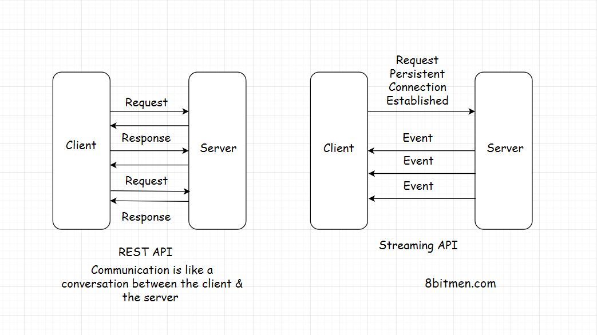

HTTP Push-Based Technologies
In this lesson, we will discuss some HTTP Push based technologies.
We'll cover the following
Web Sockets #
A Web Socket connection is ideally preferred when we need a persistent bi-directional low latency data flow from the client to server & back.
Typical use-cases of these are messaging, chat applications, real-time social streams & browser-based massive multiplayer games which have quite a number of read writes in comparison to a regular web app.
With Web Sockets, we can keep the client-server connection open as long as we want.
Have bi-directional data? Go ahead with Web Sockets. One more thing, Web Sockets tech doesn’t work over HTTP. It runs over TCP. The server & the client should both support web sockets or else it won’t work.
The WebSocket API & Introducing WebSockets – Bringing Sockets to the Web are good resources for further reading on web sockets
AJAX – Long Polling #
Long Polling lies somewhere between Ajax & Web Sockets. In this technique instead of immediately returning the response, the server holds the response until it finds an update to be sent to the client.
The connection in long polling stays open a bit longer in comparison to polling. The server doesn’t return an empty response. If the connection breaks, the client has to re-establish the connection to the server.
The upside of using this technique is that there are quite a smaller number of requests sent from the client to the server, in comparison to the regular polling mechanism. This reduces a lot of network bandwidth consumption.
Long polling can be used in simple asynchronous data fetch use cases when you do not want to poll the server every now & then.
HTML5 Event Source API & Server Sent Events #
The Server-Sent Events implementation takes a bit of a different approach. Instead of the client polling for data, the server automatically pushes the data to the client whenever the updates are available. The incoming messages from the server are treated as Events.
Via this approach, the servers can initiate data transmission towards the client once the client has established the connection with an initial request.
This helps in getting rid of a huge number of blank request-response cycles cutting down the bandwidth consumption by notches.
To implement server-sent events, the backend language should support the technology & on the UI HTML5 Event source API is used to receive the data in-coming from the backend.
An important thing to note here is that once the client establishes a connection with the server, the data flow is in one direction only, that is from the server to the client.
SSE is ideal for scenarios such as a real-time feed like that of Twitter, displaying stock quotes on the UI, real-time notifications etc.
Streaming Over HTTP #
Streaming Over HTTP is ideal for cases where we need to stream large data over HTTP by breaking it into smaller chunks. This is possible with HTML5 & a JavaScript Stream API.

The technique is primarily used for streaming multimedia content, like large images, videos etc, over HTTP.
Due to this, we can watch a partially downloaded video as it continues to download, by playing the downloaded chunks on the client.
To stream data, both the client & the server agree to conform to some streaming settings. This helps them figure when the stream begins & ends over an HTTP request-response model.
You can go through this resource for further reading on Stream API
Summary #
So, now we have an understanding of what HTTP Pull & Push is. We went through different technologies which help us establish a persistent connection between the client and the server.
Every tech has a specific use case, Ajax is used to dynamically update the web page by polling the server at regular intervals.
Long polling has a connection open time slightly longer than the polling mechanism.
Web Sockets have bi-directional data flow, whereas Server sent events facilitate data flow from the server to the client.
Streaming over HTTP facilitates streaming of large objects like multi-media files.
What tech would fit best for our use cases depends on the kind of application we intend to build.
Alright, let’s quickly gain an insight into the pros & cons of the client and the server-side rendering.